This is the equation used that will be used as an example in which it will be re-arrenged to make a the subject. This example will also show how various mathmatical operations are handled when an equation is re-arrenged.
To remove the root operation, thus as one side has a root g both sides have an exponential g.
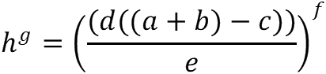This removes the root g from the right side of the equation which is now represented as the exponatial g. Note that applying an operaton on one side means that same operation must also be applied to the other side to ensure that both sides are still equal.
The process of re-arrenging exponentials is the opposite to re-arrenging roots, in the fact instead of applying exponential to both sides both sides have a root applied to both sides. Thus, in this example re-arrenging an exponential of f is done by applying root f to both sides.
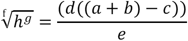This removes the exponetial of f on the left and applys root f to the right side of the equation.
In the equation the right side is being divided by the value e. To move this value of e to the other side is by multiplying both sides by e.
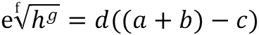This removes e from the right side and moves it to the left side of the equation.
To move the d from the right side of the equation to the left side of the equation both sides are divided by d.
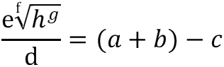This cancels out the multiplication on the right side of the equation and moves the value of d to the left side of the equation. The left side of the equation is now divided by d.
Now the left side of the equation is being subtracted by the value c. To move c to the left side of the equation both sides have the value of c added.
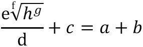This removes c from the right side of the equation and now the left side of the equation has the value of c being added.
Moving the value of b from the right side of the equation to the left is done by subtracting the value of b from both sides.
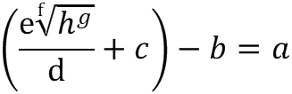This removes b from the right side of the equation and the value of be is thus moved to left side via subtraction. Thus, completes the example of making a the subject of the equation.
Expension is often the defined as the process of removeing brackets often by multiplication, below is a step by step example of how this is done.
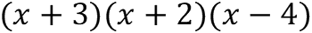Here is the equation to be expanded.
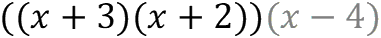Instead of expanding everying all at once it is best to expand and multiply two of the brackets first. Thus, the first step is to exand and multiply (x+3) and (x+2).
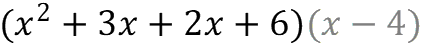Given (a+b)(c+d) then the process of expansion would be (a⋅c)+(a⋅d)+(b⋅c)+(b⋅d). Thus, the above is calculated via (x⋅x)+(x⋅2)+(3⋅x)+(3⋅2).
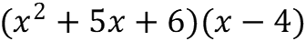Then we add all the "like terms" together, in this case this adding all the values in the form of nx together. Thus 3x and 2x are added together to produce 5x.
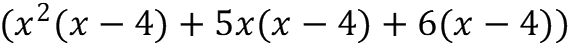Now we multiply the two remaining brackets together as shown above.
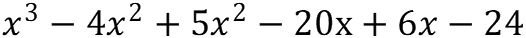Expansion via multiplication leads
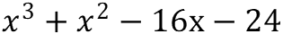The image above is the product of consolidating the like terms.
Here is the standard layout for a quadratic equation. This can be solved to find possible values of x by applying methods such as:
By substituating the corresponding values into the quadratic formula it is possible to find a value of x. It should be important that the symbol ± means that this equation has to be applied twice to obtain the two values of x. One in which the addition (+ replaces the symbol) is applied and the other subraction (where - replaces the symbol).
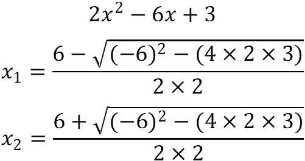Now that the quadratic formula has been explained the equation shown above will be used as an example to demostrate how algerbraic equations can be solved using the quadratic formula.
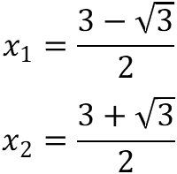Factorisation is another means of solving an algerbraic equation. A simple algerbraic example of factorisation is that given x²+bx+c then the factorised form would be (x+d)(x+e) where d+e=b and d×e=c.
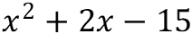Now that the concept of factorisation has been introduced the equation above will be used in a step-by-step example of how to firstly factorise and obtain the value(s) of x from the factorised form.
The first step is to identify the b and c values, in this example b = 2 and c = -15. Thus, to factorise this algerbraic equation we need to find a pair a numbers that when added together make 2 and when multiplied together make -15.
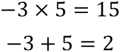As shown above the numbers -3 and 5 when added together equal 2 and when multiplied together make -15. Unfortunatly when it comes to finding these numbers there is no clear method often it is simple trail and error. However, more often than not finding the multiplication values first is often the best strategy.
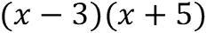This is the factorised form of the algerbraic equation. In some cases you may simply be asked to show a quadratic equation in this form. However, sometimes you maybe asked to derive the values of x from this form.
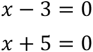To get the two possible values of x we use the contents of the two brackets to form to new equations as shown above.
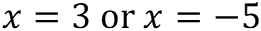We then re-arrange these new equations to get the possible values of x.
Below are the steps showing show to put a algerbraic equation in the completing the square form and how the values of x are derived.
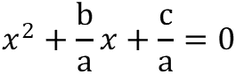 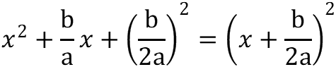 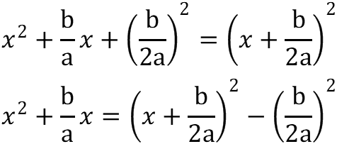 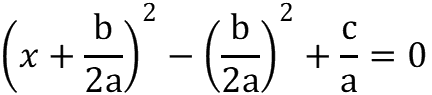Thus now the algerbraic equation is in completed sqaure form. Below outlines the steps to which it can be solved to derive the values of x.
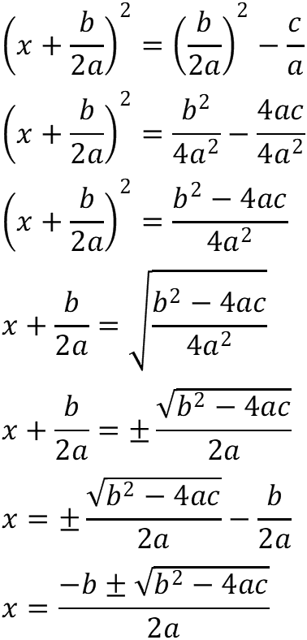